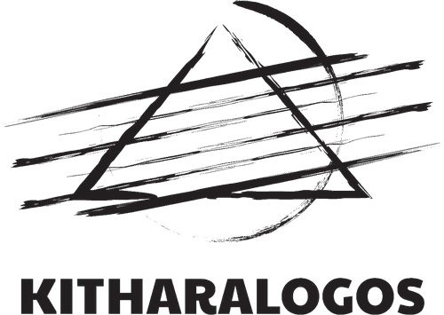
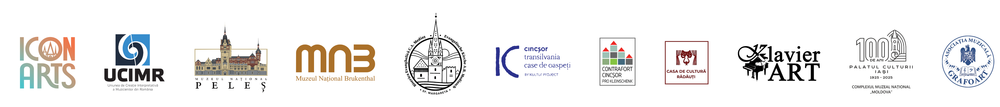
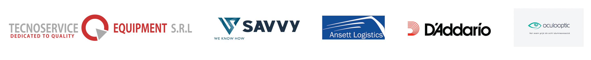
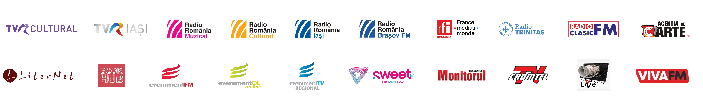
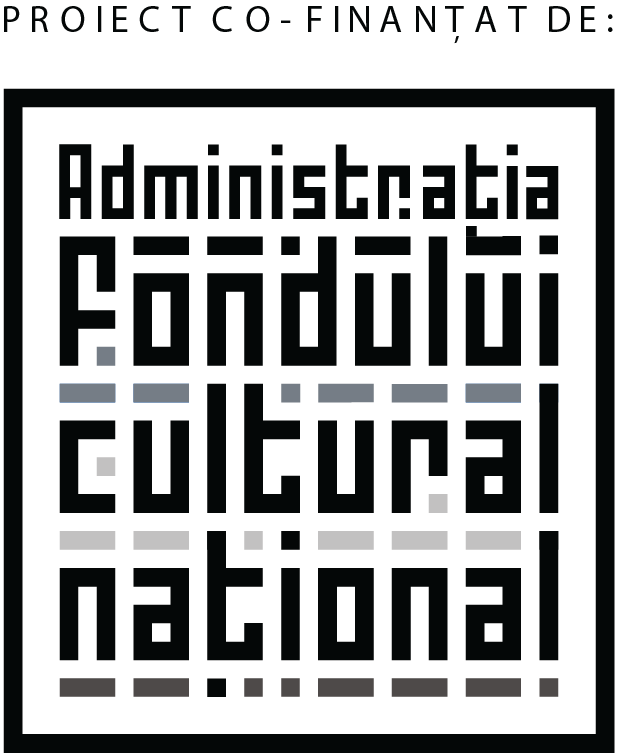

O punte între timpuri
O călătorie muzicală prin spații de patrimoniu, unde anotimpurile au lăsat în ziduri ecouri proprii.
Cum ar fi dacă 4 chitarişti ar reimagina şi reintepreta cele 4 Anotimpuri de Vivaldi într-o formulă nouă, neobişnuită? Dacă sunteți curioși, în perioada 25.07 – 9.08, vă invităm la concertele din cadrul Turneului „ANOTIMPURI” pentru a-i asculta pe cei 4 chitarişti virtuozi din nou-înfiinţatul Romanian Guitar Quartet. Vă veți bucura de o premieră absolută în spaţiul muzical românesc, într-un periplu estival prin câteva dintre cele mai frumoase edificii arhitectonice din ţară.
De la repere emblematice precum Castelul Peleș, Palatul Brukenthal sau Palatul Culturii din Iași la locuri mai puțin cunoscute — Bisericile fortificate din Cincșor și Moșna, Sinagoga Mare din Rădăuți sau Cazinoul din Vatra Dornei — călătoria inițiată de cei 4 chitariști creează o punte între timpuri, unde culorile calde ale sunetelor freamătă între zidurile străvechi, iar spațiile prind viață în ritmul anotimpurilor.
Demersul asociației îmbină o abordare muzicală inedită cu promovarea și punerea în valoare a unor edificii cu valoare arhitectonică și istorică — atât cele din circuitul turistic, cât și locuri cu mai puțină vizibilitate, care au nevoie de a fi descoperite.
Astfel, pentru patru dintre aceste spații, doi tineri cineaști vor realiza o serie de documentare, iar 4 tineri compozitori, selectați în urma unui apel național, vor dedica o scurtă lucrare pentru cvartet de chitare și bandă fiecăruia dintre ele.
Romanian Guitar Quartet
Dragoș Ilie — cel mai titrat și apreciat tânăr chitarist român, cu premii la cele mai importante concursuri chitaristice la nivel internațional, partenerul de duo al violonistului Alexandru Tomescu.
Costin Soare — unul dintre cei mai apreciați și activi muzicieni români, cu 15 turnee naționale și internaționale la activ, 4 CD-uri în portofoliu, care a colaborat cu nume importante ale scenei muzicale de la noi.
Dan Alexandru Arhire — chitarist și cadru universitar ieșean, cu multiple apariții solistice pe scenele Filarmonicilor din țară și autor a două materiale discografice.
Ioan Bănescu — recent nominalizat la categoria „Interpretul anului" în cadrul Galei UCIMR, chitarist de forță cu o activitate intensă atât în zona solistică, cât și în cea camerală.
Program
Cele zece concerte ale turneului, în ordine cronologică.
- 25 iulieSinaiaCastelul Peleș · Sala Mare de Concerte
- 26 iulieSibiuMuzeul Brukenthal
- 27 iulieMediașBiserica Evanghelică „Sf. Margareta"
- 31 iulieBiertanBiserica Fortificată din Biertan
- 1 augustCincșorBiserica Fortificată din Cincșor
- 2 augustRâșnovBiserica Evanghelică din Râșnov
- 4 augustMoșnaBiserica Fortificată din Moșna
- 7 augustRădăuțiSinagoga Mare din Rădăuți
- 8 augustVatra DorneiCazinoul din Vatra Dornei
- 9 augustIașiPalatul Culturii · Sala Voievozilor
Cele 10 locuri
Organizator
Asociația Culturală KITHARALOGOS

Parteneri
Festivalul și Academia Icon Arts Transilvania · Asociația UCIMR (Uniunea de Creație Interpretativă a Muzicienilor din România) · Muzeul Național Peleș · Muzeul Național Brukenthal · Biserica Evanghelică Sf. Margareta, Mediaș · Asociația Contrafort · Casa de Cultură, Rădăuți · Sinagoga Mare, Rădăuți · Asociația Klavier Art · Centrul Muzeal „Cazinoul Băilor", Vatra Dornei · Complexul Național Muzeal „Moldova", Iași · Asociația Grafoart

Cu sprijinul
Tecnoservice Equipment SRL · Savvy Finance · Ansett Logistics · D'Addario · Oculooptic SRL

Parteneri media
TVR Cultural · TVR Iași · Radio România Muzical · Radio România Cultural · Radio România Iași · Radio România Brașov · RFI România · Radio Trinitas · Radio Clasic · Agenția de Carte.ro · Liternet.ro · BookHub.ro · Eveniment FM Sibiu · Sweet FM · Monitorul de Suceava · Cromtel TV · Radautiziar.ro · Viva FM · România Pozitivă

Finanțator
Administrația Fondului Cultural Național

Proiectul nu reprezintă în mod necesar poziția Administrației Fondului Cultural Național. AFCN nu este responsabilă de conținutul proiectului sau de modul în care rezultatele proiectului pot fi folosite. Acestea sunt în întregime responsabilitatea beneficiarului finanțării.